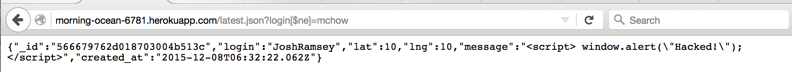
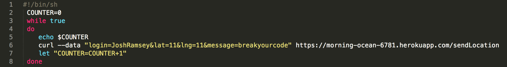
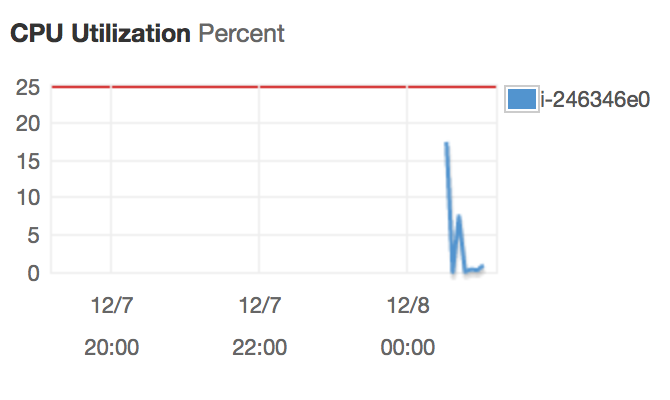
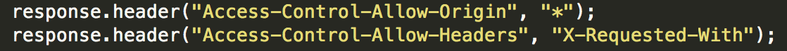

This security assessment describes the web security flaws of the MapChat application server created by Ming Chow for the Tufts University Fall 2015 Web Programming course. The server was deployed by using Heroku, Node.js with the Express web framework, and MongoDB. The application receives check-ins from a set of approved logins. A check-in consists of a login, latitude, longitude, and a message.
The flaws discussed in this assessment were determined by their level of threat to both the longevity of the developer's application, the threat to the functionality of the server, as well as the threat to the client and other clients privacy.
First the server was deployed to a new Heroku app with MongoLab installed. The code was not analyzed until "black box" testing was carried out. Most of the security flaws were found without examining the server code. Eventually the code was reviewed and further faults were exposed.
The findings can be broken into three broad categories:
Cross Site Scripting (XSS)
Problem: Insertion of Malicious Script As The Checkin Message Possible Resolutions Practical limitations of MongoDB
Problem: MongoDB Operators Allow For Privacy Violations Possible Resolutions Theoretical limitations of MongoDB
Problem: MongoDB Has Limited Functional Capacity Possible Resolutions Setting Response Headers
Problem: Response Headers Allow Access From All Origins Possible Resolutions
XSS occurs when scripts are maliciously embedded in a page that are executed on the client-side (in the user's web browser) rather than on the server-side. Unfortunately, the ability for the user to determine their own message allows for the insertion of a script tag in the message. Here, the Google plug-in Postman was used to insert script into the client side of the application. The injected script was used to produce a simple alert pop-up. However, someone with malicious intent could inject script which steals the clients information, corrupts the browser, and so on.
It is vital that when reading in a user's check-in information, any tags are sanitized upon reading in the data. This can be accomplished by using HTML encoding to encode the characters in the message. In this instance, <script> becomes
>script>
When sending the GET request /latest.json?login=mchow the application is supposed to return the last check-in of the specified login, in this case mchow. If no login exists, the application should return {} However, when sending the request /latest.json?login[$ne]=my_login the application returns the last login in the database that is not the specified login. In this case executing /latest.json?login[$ne]=mchow returned my login, JoshRamsey

Since we are using the Mongo Database, the Mongo operators can be used to return data that should not be returned. In this case, $ne selects the documents where the value of the field is not equal (i.e. !=) to the specified value. This includes documents that do not contain the field. This exposes the private information of one client to another client. If the database was storing credit card or other sensitive information this could be catastrophic.
Again, an attempt at sanitation should be made. Additionally, another database may be used to alleviate this issue. The Mongo documentation should be reviewed as well to see if there is a way to strip the client of the ability to manipulate the database with operators.
This next security flaw is more theoretical but is very real. There is nothing in the server code that limits the number of check-ins from a given login. This means that a client could overload the database with check-ins. This may cause the server to crash or even worse, incur a charge on Heroku. The biggest issue here is that if malicious script existed, it could be injected rapidly.
It's quite hard to test these theories since computing resources were limited. However, in an attempt to achieve some significant result, the use of Amazon Web Services (AWS) was used. Specifically, the Amazon Elastic Compute Cloud (Amazon EC2) service was used. This service is a web service that "provides resizable compute capacity in the cloud."
Amazon describes their services below:
Amazon EC2’s simple web service interface allows you to obtain and configure capacity with minimal
friction. It provides you with complete control of your computing resources and lets you run on Amazon’s
proven computing environment. Amazon EC2 reduces the time required to obtain and boot new server
instances to minutes, allowing you to quickly scale capacity, both up and down, as your computing requirements change

The script was then uploaded to the Amazon server and executed. The result was rapid insertion of data (rate of ~150/minute)

The server code can be updated to only accept a certain number of checkins per minute. It may be useful to also limit the number of checkins from a certain login per unit time.
The root of the problem with the set response headers lies with the Same Origin Policy (SOP) and Cross Origin Resource Sharing (CORS). The SOP states that requests must have the same URI scheme, hostname, and port number. This means that content from one origin will be unable to access/modify content from a different origin. Enabling CORS is a way to bypass the SOP. In this case, this was needed for the web server to enable secure cross-domain data transfers (the check-ins).

However, by setting the response header to "Access-Control-Allow-Origin: * " the requested resource allows sharing with every origin. This means that any site can send a request to the server and access the server’s response. This is a violation of privacy for clients. Additionally, this leaves the application vulnerable when there may be a malicious script in the request to the server.
Upon research a better way to handle CORS would be the following: have the server read the Origin header from the client, compare that to the list of domains you'd like to allow, and if it matches, echo the value of the Origin header back to the client as the Access-Control-Allow-Origin header in the response.
Conclusion
Unfortunately, at the current time this application is ridden with security flaws. The privacy of clients is not maintained to the accepted standard. The resource sharing must be limited in its scope to prevent the threat of other clients accessing restricted information. If these other clients were to send malicious script as a check-in, the server code does not attempt to sanitize incoming data or limit the number of check-ins by these clients. Sanitation should not be limited to script but should also address Mongo operators. In the future, if the application gains popularity, the capacity of the Mongo database should also be addressed, as a crashed database is an unsecure one. While these issues are a plenty and are quite significant, they are indeed easily fixable.